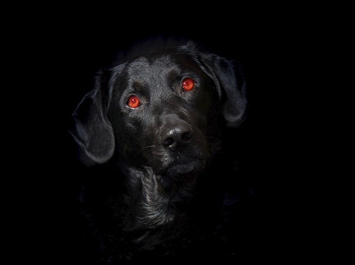

Há uma lenda urbana na Venezuela em torno de "El Silbón" (O Assobiador), uma figura conhecida nas
planícies e pradarias do país.
O assobiador é geralmente descrito como um homem muito magro, vestido com roupa de vaqueiro e uma chapéu
de aba larga que esconde sua face esquelética. Ele vagueia pelo campo e pelos matagais à
noite, com ombros caídos e olhar para baixo, carregando uma bolsa pesada cheia de ossos e restos
decompostos em suas costas.
Fiel ao seu nome, a entidade continuamente assobia muito alto. Ele também é muito alto e forte, com
alguns relatos descrevendo-o como mais de seis metros de altura.
Há rumores de que ele ataca viajantes solitários, especialmente homens bêbados ou infiéis. Diz a lenda
que apesar de seu assobio ser escutado alto e próximo, ninguém consegue ver de onde ele vem. E
ao contrário da lógica, quando o som diminui e parece mais distante, é quando o assobiador está
mais próximo.
Apesar do Chupacabra também ser conhecido no Brasil, no México e nos EUA, essa lenda começou em
Porto Rico.
Chupacabra é uma criatura que é conhecida por sugar o sangue de animais, em particular, de cabras. A
descrição dessa criatura é que ela se parecia com um urso, mas tem espinhos nas costas que vão
do pescoço até a cauda. Outras descrições acrescentam que tem pele escamosa.
Ele foi classificado como uma lenda urbana pois acredita-se que as testemunhas podem ter confundido
a criatura com um coiote. Vários documentários tentaram localizar a criatura, mas
nada foi comprovado.
Esta lenda foi contada de várias formas durante séculos, e tem versões em diversos países.
Uma das versões mais populares conta que o espírito maligno de Bloody Mary pode ser convocado
chamando seu nome três vezes em um espelho.
Então, o espírito aparecerá no espelho como um cadáver coberto de sangue, ela se inclinará para
frente e arrancará seus olhos, ou te puxará em direção a ela, te prendendo no espelho
por toda a eternidade.
Black Shuck é o nome dado a um cão negro que dizem vagar pelo leste da Inglaterra. O cão
é descrito como sendo grande e peludo, e costuma aparecer a noite. Esse animal
geralmente é associado ao diabo, e sua aparição é considerada um presságio da morte.
Por outro lado, algumas histórias dizem que esse animal ajuda os viajantes perdidos a
chegarem aos seus destinos, contradizendo as afirmações de que traz má sorte entrar em
contato com a criatura.